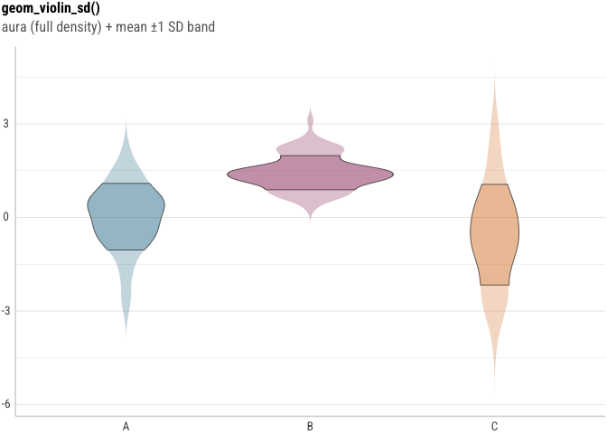
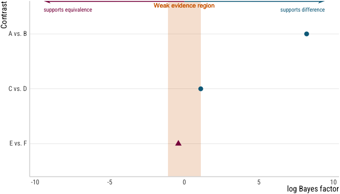

A ggplot2 theme (theme_mt()) plus a set of composable geoms and plot builders used across the author’s experimental projects: mean ± 1 SD violin/half-violin/split-violin geoms for raw observations, and ggdist-based halfeye/ridge/coefficient-grid, location-scale, and log Bayes Factor forest plot builders for posterior draws from Bayesian models (typically fit with brms).
This package is not intended for general audiences - it’s published so that the specific analyses that depend on it are reproducible by anyone who installs the tagged version they were built with.
Installation
# install.packages("pak")
pak::pak("mkthalmann/emptyviz")To pin the exact version a given analysis was built with (recommended for reproducing a specific plot), install a tag or commit instead of the default branch:
pak::pak("mkthalmann/emptyviz@v0.1.0")theme_mt() defaults to the "Roboto Condensed" font family, which this package does not install - it must already be available on the system for text to render as intended. Most graphics devices fall back to a different font silently rather than erroring, so a missing font won’t be obvious; install it, or pass theme_mt(base_family = "")/another available family, if reproducing a plot’s exact appearance matters.
Usage
library(emptyviz)
library(ggplot2)
# sets theme_mt() as the active ggplot2 theme
use_theme_mt()
set.seed(42)
demo_data <- rbind(
data.frame(group = "A", value = rnorm(80, 0, 1)),
data.frame(group = "B", value = rnorm(80, 1.5, 0.6)),
data.frame(group = "C", value = rnorm(80, -0.5, 1.8))
)
ggplot(demo_data, aes(x = group, y = value, fill = group)) +
geom_violin_sd() +
labs(
title = "geom_violin_sd()",
subtitle = "aura (full density) + mean ±1 SD band",
x = NULL, y = NULL
) +
guides(fill = "none")
bf_data <- data.frame(
contrast = c("A vs. B", "C vs. D", "E vs. F"),
log_bf = c(8.2, 1.1, -0.4)
)
plot_bf_forest(
bf_data,
contrast = contrast,
log_bf = log_bf,
direction_labels = c("supports difference", "supports equivalence")
)
See vignette("geoms-and-theme") for the theme and the three _sd violin geoms, and vignette("bayesian-plots") for the halfeye/ridge/coefficient-grid, location-scale, and Bayes Factor forest plot builders.
Dark mode
theme_mt(dark = TRUE) is a dark-background variant - transparent plot/panel background, light text/gridline colors, and dark_mt_colors5 in place of mt_colors5 as the discrete palette - for a plot rendered directly against a dark page. theme_mt()’s regular (dark = FALSE) output is unaffected by this argument existing.
In a Quarto document, use_theme_mt() also registers automatic dual light/dark figure rendering: set the dual_render chunk option to TRUE (per chunk, or as a project-wide knitr: opts_chunk: dual_render: true default) and every ggplot/patchwork figure in that chunk renders twice - once normally, once with the dark variant - wrapped for Quarto’s .light-content/.dark-content toggle, so a light/dark theme-switching site shows the right one without any client-side re-rendering. Chunks that don’t set the option are unaffected.